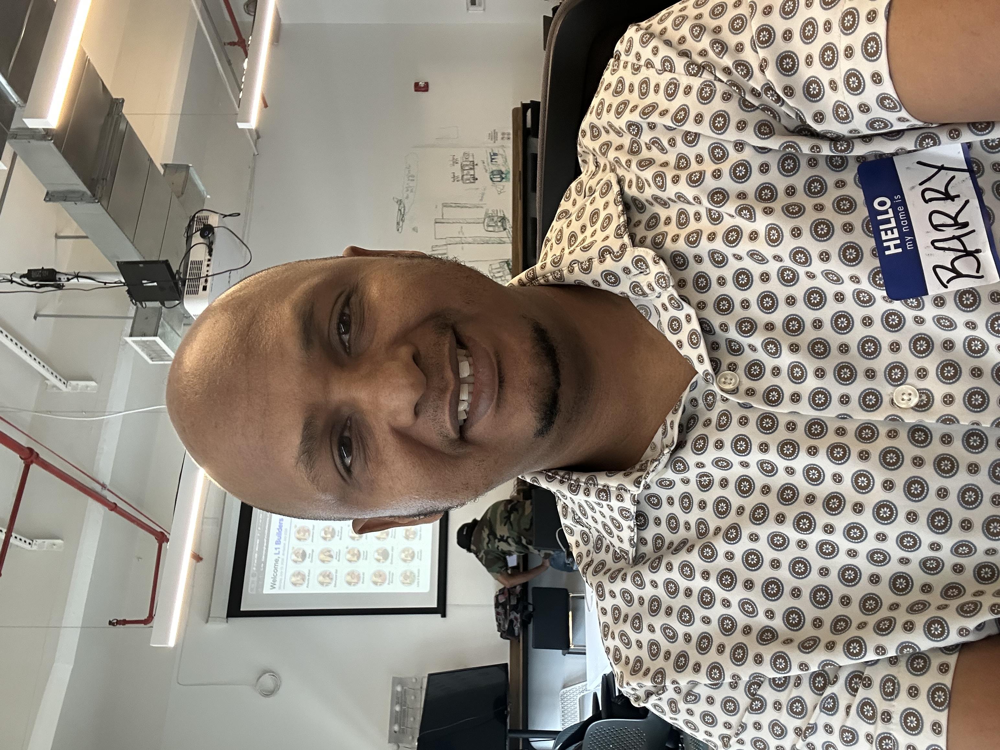

AI Problem-Solving
Breaking down complex challenges and exploring how AI tools can address them thoughtfully and effectively.

Hello, I'm
Aspiring AI Professional Building Responsible Solutions for Real-World Challenges
I am a Political Science and Finance graduate developing AI skills through the Pursuit AI Native program. I combine analytical thinking, technology, and problem-solving to create AI-powered solutions that improve decision-making, support industries, and create meaningful impact, including exploring how AI can contribute to Guinea's mining sector.
A blend of analytical rigor, business understanding, and growing technical capability — with a focus on connecting problems to practical solutions.
Breaking down complex challenges and exploring how AI tools can address them thoughtfully and effectively.
Crafting clear, structured prompts to get reliable outputs from AI systems for research, analysis, and prototyping.
Defining user needs, scoping features, and designing solutions that deliver real value — not just technical demos.
Investigating problems deeply, synthesizing information, and presenting findings with clarity and structure.
Learning new tools quickly, experimenting with emerging platforms, and integrating them into practical workflows.
Translating technical concepts for diverse audiences and working effectively across teams and stakeholders.
Connecting organizational challenges with technology solutions — understanding what teams need before proposing what tools can do.
My journey began in Political Science and Finance — fields that taught me how to analyze complex systems, evaluate trade-offs, and understand how decisions ripple through organizations, economies, and communities. That foundation shaped how I think: always looking at problems from multiple angles before reaching for a solution.
Today, I'm actively building AI skills through the Pursuit AI Native program, where I learn to design AI-powered solutions, work with modern development tools, and apply technology to challenges that matter. I'm not claiming years of industry experience — I'm claiming curiosity, discipline, and a track record of turning learning into action through real projects.
What drives me is purpose. I want to use AI responsibly to improve industries and communities — especially in Guinea, where the mining sector holds enormous potential for economic growth and sustainable development. I believe technology should make information more accessible, decisions more transparent, and outcomes more equitable.
A concept platform exploring how AI can improve transparency, decision-making, and sustainable practices in one of West Africa's most resource-rich sectors.
What are the latest environmental compliance requirements for bauxite mining?
Based on current regulations, operators must submit quarterly environmental impact reports and maintain water quality monitoring at all extraction sites...
Guinea's mining sector faces significant challenges: scattered and hard-to-access information, complex regulatory documents, limited transparency between companies and government agencies, and decision-making slowed by data that lives in silos. Stakeholders — from mining operators to policymakers — need better tools to organize, understand, and act on critical information.
An AI-powered platform concept designed to help mining companies, government agencies, and community stakeholders organize information, analyze data, summarize regulations, and support more informed, transparent decisions across the sector.
I researched the sector's information challenges, designed the platform concept, applied prompt engineering to prototype the AI assistant experience, and explored how technology can create measurable value for mining organizations and the communities they serve. This project reflects my approach: understand the problem deeply, then build thoughtfully.
An intensive, hands-on program where I am actively building the skills to design and deliver AI solutions — learning by doing, iterating, and improving.
Learning foundational AI concepts — from how large language models work to the principles of responsible AI. Understanding bias, transparency, and the importance of building technology that serves people, not the other way around.
Creating real projects through iterative development — testing ideas, refining approaches, and learning from what works and what doesn't. Each project strengthens my ability to move from concept to working prototype.
Developing confidence with AI development tools, coding environments, and structured problem-solving methods. I'm building the technical fluency to collaborate effectively with engineering teams while contributing meaningfully from day one.
I'm early in my AI career — and that's intentional. I'm investing deeply in learning now so I can contribute with both skill and perspective as the field evolves.
I'm open to conversations with recruiters, hiring managers, mining companies, government organizations, and technology programs. Whether you're exploring a collaboration, an internship, or a role where analytical thinking meets AI — I'd love to hear from you.
Follow My Journey
Connect with me on LinkedIn and X to follow my learning progress, project updates, and thoughts on AI, technology, and responsible innovation.